Tavukçuluk ve kümes rehberi
Kümes kurmayı düşünenler ve sürüsünü büyütmek isteyenler için sahadan, abartısız rehberler: maliyet hesapları, ruhsat ve destekler, kışa hazırlık, verim ve daha fazlası.

Kümes maliyeti: betonarme mi, çadır kümes mi daha hesaplı?
Kümes yapmak kaç paraya mal olur? Betonarme kümes ile çadır kümesi maliyet, süre, ruhsat ve amortisman üzerinden gerçek fiyatlarla karşılaştırdık.
3 Temmuz 2026 · Okuma süresi: 9 dkYazıyı oku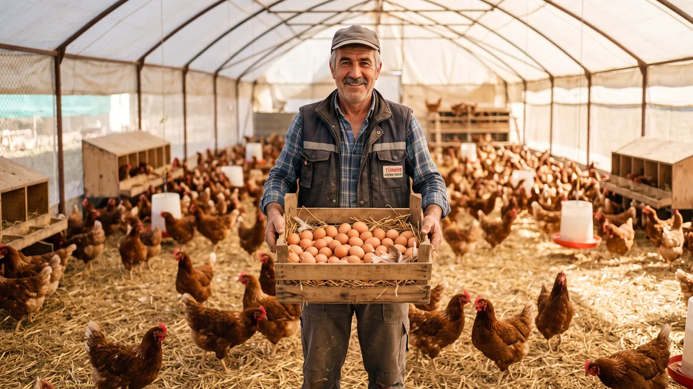
500 tavukla yumurta işine başlamak: gerçekçi bir yol haritası
500 tavukla yumurta üretimine başlamak isteyenler için yatırım kalemleri, 70 m² kümes maliyeti, gelir hesap şablonu ve ilk 6 ayın takvimi; gerçekçi rakamlarla.
3 Temmuz 2026 · Okuma süresi: 7 dkYazıyı oku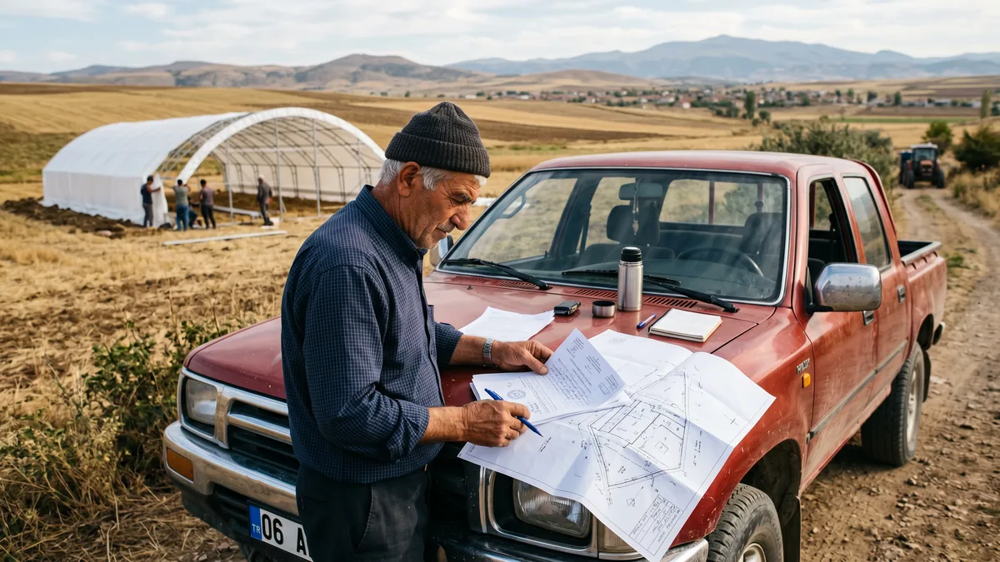
Kümes için ruhsat gerekir mi? Çadır kümesin mevzuattaki yeri
Kümes için ruhsat gerekir mi? Betonarme kümes ile çadır kümesin mevzuattaki farkı, tarım arazisi kuralları ve kurulum öncesi soru listesi bu rehberde.
3 Temmuz 2026 · Okuma süresi: 7 dkYazıyı oku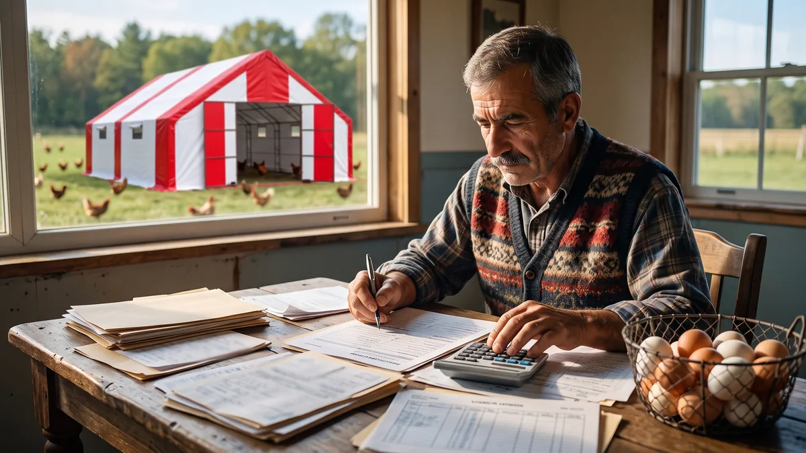
Tavukçulukta devlet desteği ve hibeler: nereden başlamalı?
Tavukçulukta hibe ve destek arayanlara yol haritası: Bakanlık kırsal kalkınma destekleri, TKDK/IPARD, Ziraat Bankası kredileri ve başvuru adımları.
3 Temmuz 2026 · Okuma süresi: 8 dkYazıyı oku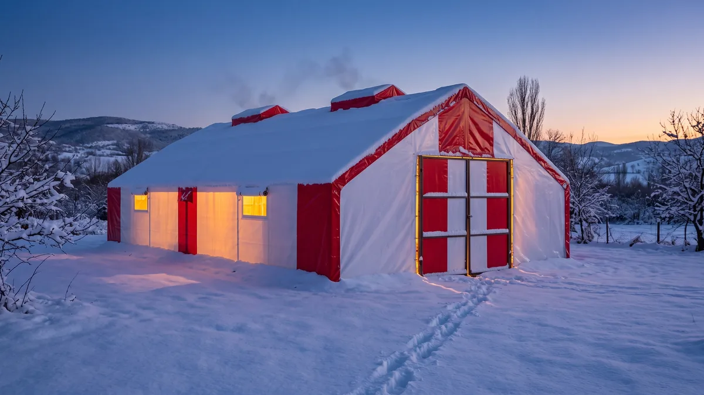
Kışın kümes nasıl sıcak tutulur? Yalıtım, yoğuşma ve havalandırma dengesi
Tavuklar soğuğa dayanıklıdır; asıl düşman cereyan ve nemdir. Kümes yalıtımını, yoğuşmayı ve kış havalandırması dengesini sahadan örneklerle anlatıyoruz.
3 Temmuz 2026 · Okuma süresi: 8 dkYazıyı oku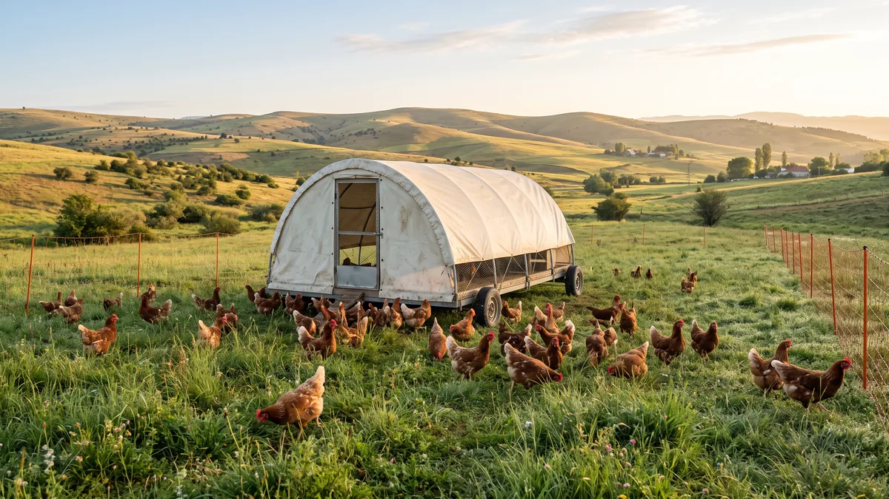
Gezen tavuk sistemi kurmak: alan hesabı, çit ve barınak planı
Gezen tavuk çiftliği kurmak isteyenler için alan hesabı, rotasyon düzeni, çit ve yırtıcı koruması, folluk yerleşimi ve barınak planı; hesap örnekleriyle.
3 Temmuz 2026 · Okuma süresi: 9 dkYazıyı oku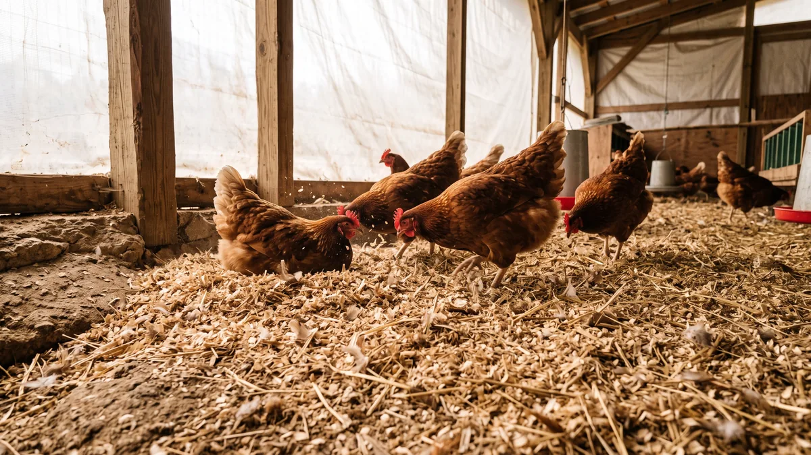
Kümes zemini ne olmalı? Toprak, şap, beton ve kilit taşı karşılaştırması
Kümes tabanı toprak mı beton mu olmalı? Maliyet, temizlik, nem ve kemirgen riski açısından dört zemini karşılaştırdık; altlık ve drenaj önerileriyle.
3 Temmuz 2026 · Okuma süresi: 8 dkYazıyı oku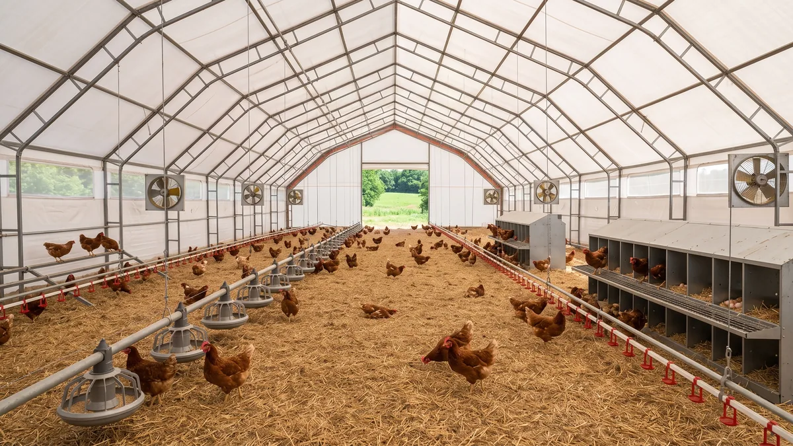
Tavuk başına kaç metrekare gerekir? Kapasite hesabının doğrusu
Tavuk başına kaç m² gerekir? 7 tavuk/m² standardının mantığı, 100-2000 tavuk için hazır kümes ölçü tablosu ve sıkışıklığın gizli maliyeti bu yazıda.
3 Temmuz 2026 · Okuma süresi: 8 dkYazıyı oku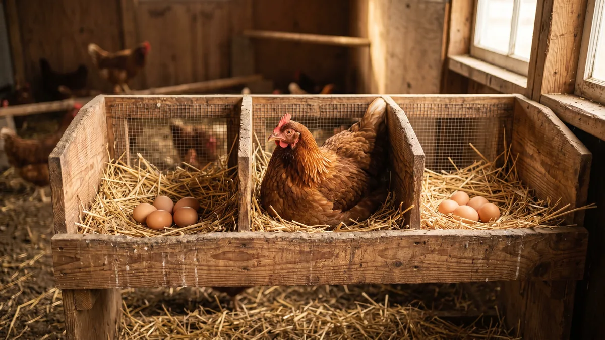
Yumurta verimini düşüren 7 kümes hatası: belirtiler ve çözümler
Tavuklar neden yumurtlamıyor? Yem, su, ışık, sıkışıklık, amonyak, parazit ve folluk hatalarını belirtileriyle anlatıyor, pratik çözümler veriyoruz.
3 Temmuz 2026 · Okuma süresi: 8 dkYazıyı oku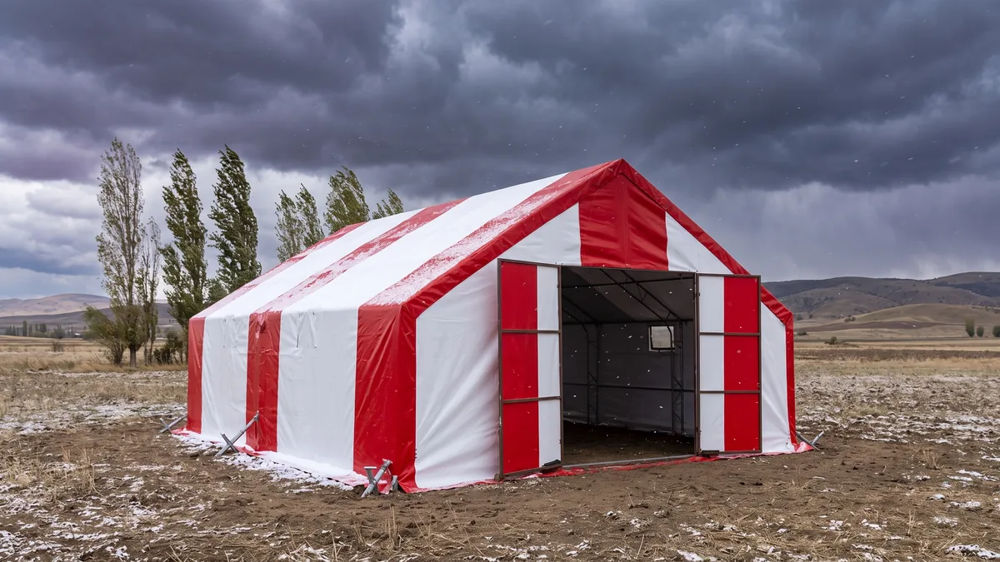
Çadır kümes ne kadar dayanıklı? Rüzgâr, kar ve fırtına gerçekleri
Çadır kümes rüzgâra, kara dayanır mı? 2 mm galvaniz makas iskelet, 650 g/m² branda ve sabitleme mantığını abartısız anlattık. Kar küreme ve bakım ipuçlarıyla.
3 Temmuz 2026 · Okuma süresi: 8 dkYazıyı oku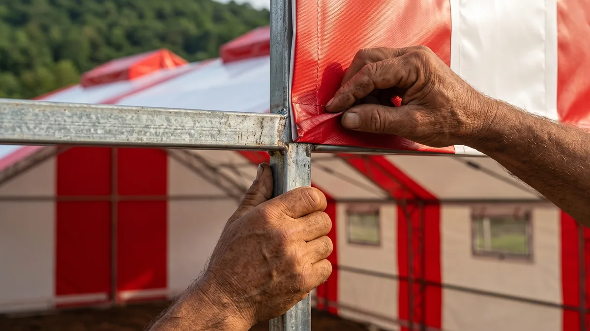
Çadır kümes alırken nelere dikkat edilmeli? 12 maddelik kontrol listesi
Çadır kümes alırken branda gramajından garanti şartına 12 kritik kontrol: iskelet, montaj, nakliye ve sözleşmede nelere bakmalı? Mağdur olmamak için okuyun.
4 Temmuz 2026 · Okuma süresi: 7 dkYazıyı oku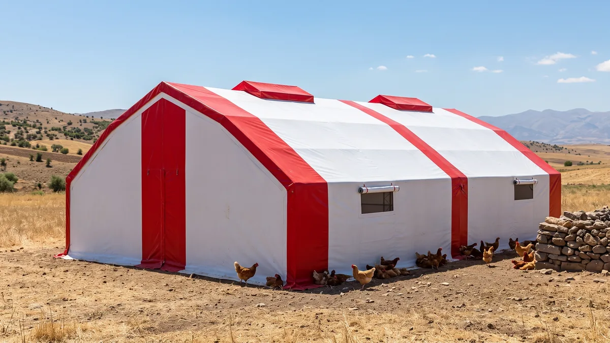
Yazın kümes nasıl serin tutulur? Sıcak stresi ve yumurta kaybını önleme
Tavuklar sıcakta neden yumurtlamaz? Sıcak stresi belirtileri, kümes serinletme yöntemleri, gölgeleme, havalandırma ve su yönetimi; sahadan pratik önlemlerle.
4 Temmuz 2026 · Okuma süresi: 6 dkYazıyı oku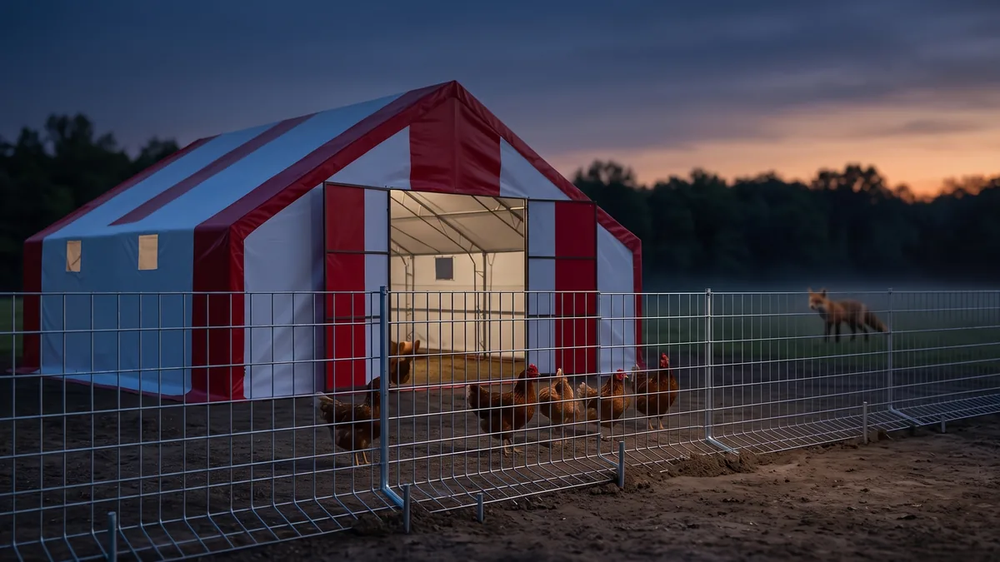
Tilki, sansar ve yılana karşı kümes güvenliği: çit, taban ve kapı detayları
Tilki telin altını kazar, sansar yumruk deliğinden girer. Kümesi yırtıcılardan koruyan çit eteği, taban, kapı ve gece rutini; sahadan kanıtlanmış detaylarla.
4 Temmuz 2026 · Okuma süresi: 6 dkYazıyı oku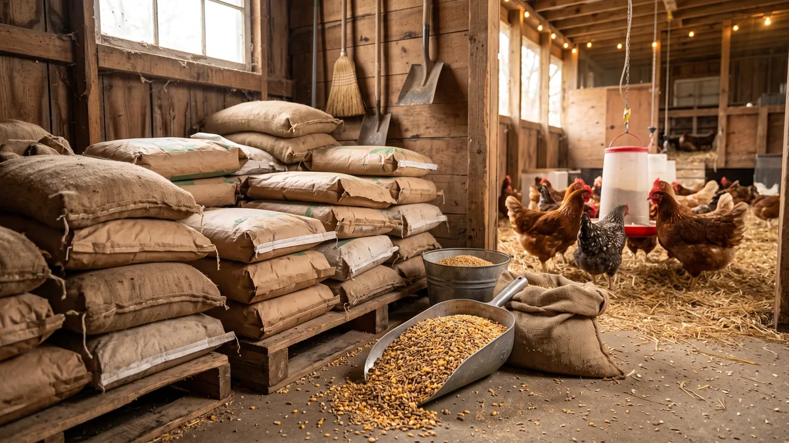
Tavuk başına günlük yem hesabı: 100-1.000 tavuk için aylık yem bütçesi
Yumurta tavuğu günde kaç gram yem yer? 100, 500 ve 1.000 tavuk için aylık yem hesabı, yem-yumurta dengesi ve maliyeti düşürmenin doğru yolları bu rehberde.
4 Temmuz 2026 · Okuma süresi: 6 dkYazıyı oku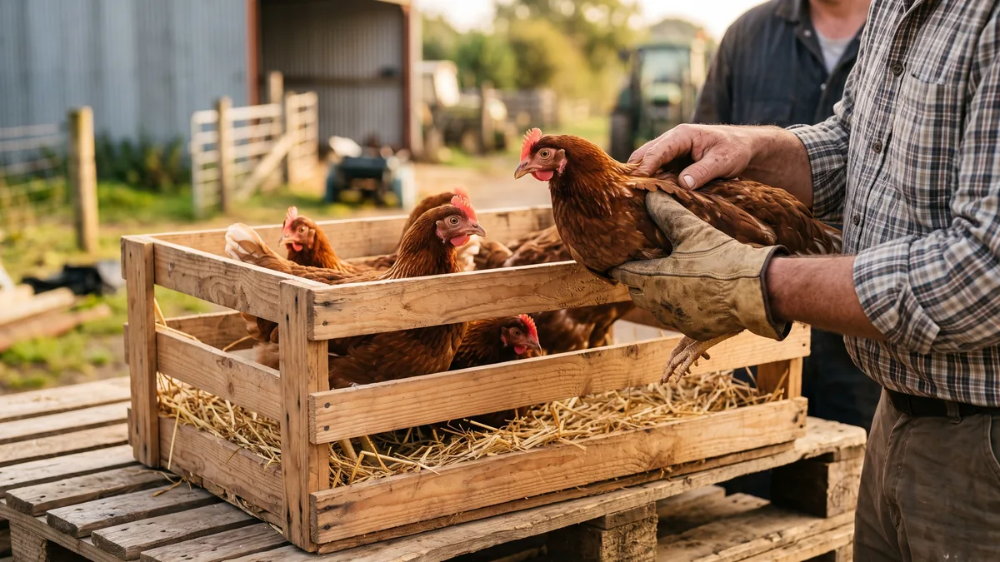
Yarka alırken nelere dikkat edilmeli? Yaş, aşı, nakliye ve ilk hafta
Yarka nedir, kaç haftalıkken alınır? Sağlıklı yarka nasıl anlaşılır, satıcıya hangi belgeler sorulur, nakliyede ve ilk hafta neler yapılır? Mağduriyet yaşamayın.
4 Temmuz 2026 · Okuma süresi: 7 dkYazıyı oku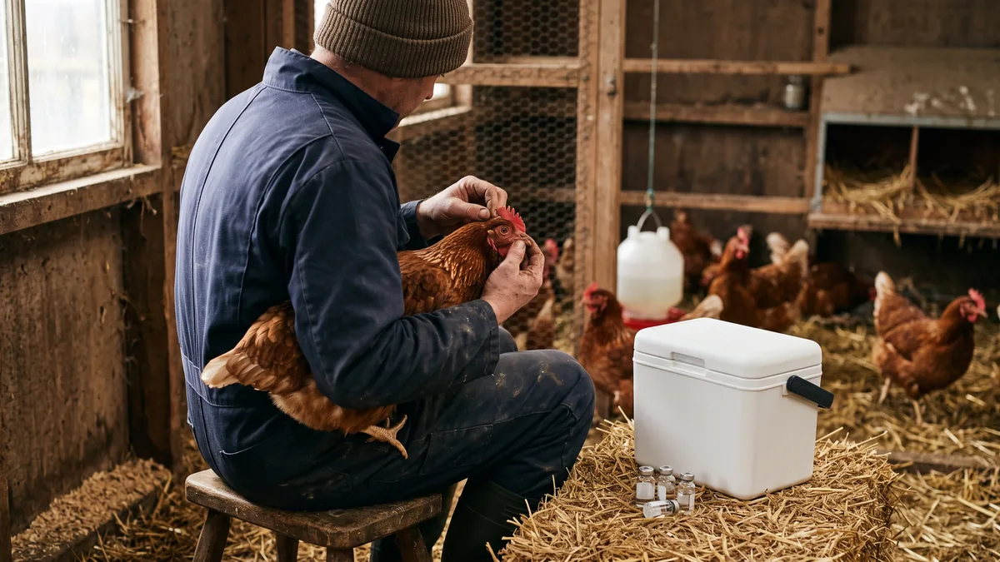
Tavuk hastalıkları: belirtiler, aşı takvimi ve sürüyü koruyan 5 kural
Tavuğunuz hapşırıyor mu, tüyleri kabarık mı? Yaygın tavuk hastalıklarının belirtileri, civcivden yarkaya aşı takvimi ve sürüyü koruyan biyogüvenlik kuralları.
4 Temmuz 2026 · Okuma süresi: 6 dkYazıyı oku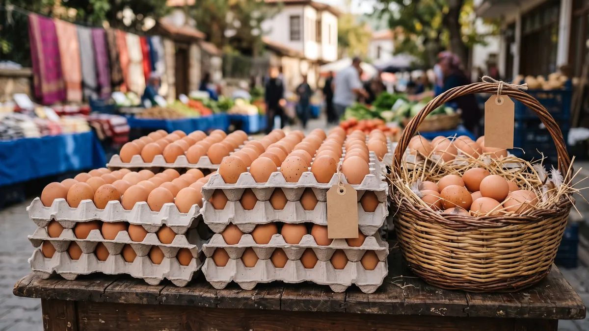
Köy yumurtası nasıl satılır? Aracısız 7 satış kanalı ve fiyatlama
Köy yumurtasını aracıya değil doğrudan müşteriye satmanın 7 yolu: mahalle ağı, WhatsApp siparişi, pazar, abonelik. Fiyat belirleme ve müşteri tutma taktikleri.
4 Temmuz 2026 · Okuma süresi: 6 dkYazıyı oku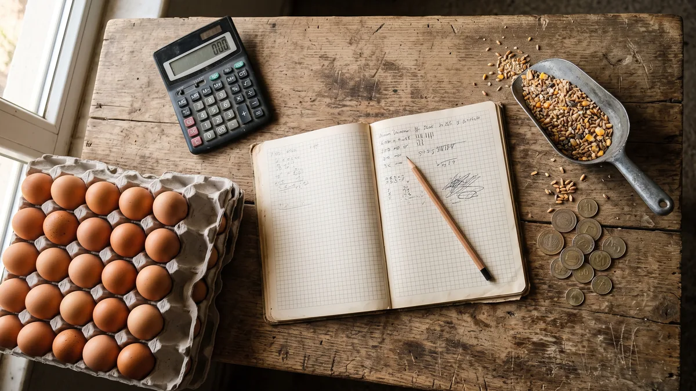
Tavukçuluk kârlı mı? 10, 100 ve 500 tavuk için gerçekçi hesap
Tavuk beslemek kârlı bir iş mi? 10 tavuğun neden para kazandırmadığı, kârın hangi ölçekte başladığı ve kârı belirleyen 3 kaldıraç; abartısız rakamlarla.
4 Temmuz 2026 · Okuma süresi: 6 dkYazıyı oku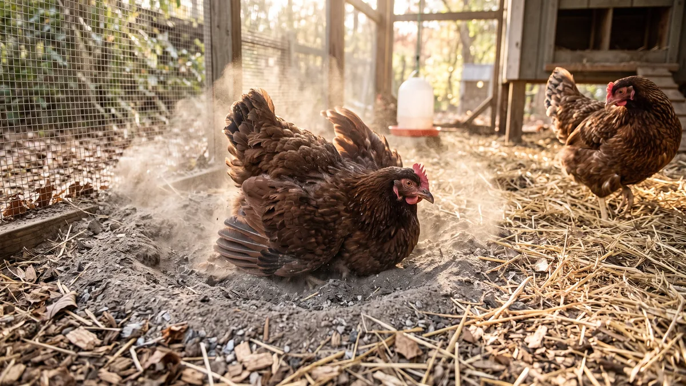
Tavuklarda bit ve kırmızı akar: belirtiler, temizlik ve aylık koruma rutini
Tavuğunuz huzursuz, verimi düştü mü? Bit ve kırmızı akar belirtileri, gece fener testi, kül banyosu, kireç badanası ve aylık koruma rutini bu rehberde.
4 Temmuz 2026 · Okuma süresi: 7 dkYazıyı oku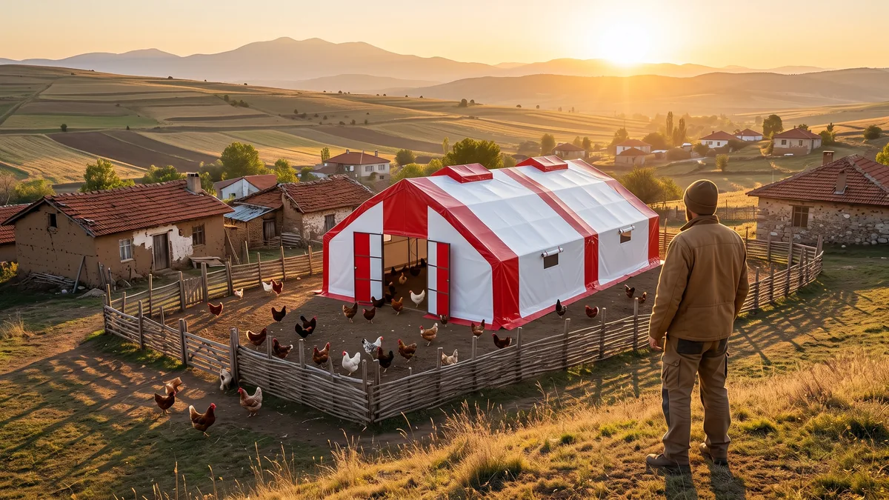
Köye dönüp tavukçuluğa başlayanların battığı 7 nokta (ve 90 günlük sağlam plan)
Köye dönüp tavukçulukla geçinmek isteyenlerin en sık battığı 7 nokta: pazarsız üretim, yem hesabı, ölçek hatası ve dahası. 90 günlük sağlam başlangıç planıyla.
4 Temmuz 2026 · Okuma süresi: 7 dkYazıyı okuProjenizi birlikte planlayalım
Kapasitenizi ve bölgenizi yazın; ölçü ve teklifi birlikte çıkaralım.
Kapasitenizi yazın